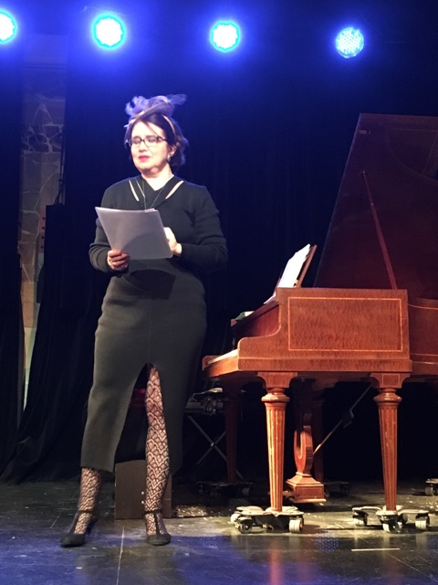

En mes spectacles piano/poésie s'organise une mise en résonance de texte de poètes modernes ou contemporains (Pessoa, A. Velter, Guillevic, Y. Bonnefoy, C. Bobin, René Char... La liste intégrale prendrait des pages avec ma centaine de spectacles créés à ce jour! )
Mise en résonance donc de textes lus avec l'interprétation d'œuvres pianistiques du répertoire classique : de Bach à Max Reger, en passant bien sûr par le classique, les romantiques, les slaves du début du 20ème, et aussi avant Schoenberg, Debussy, Ravel, C. Franck et Satie.
Tout cela a lieu chaque mois dans de petites salles ou lieux culturels parisiens offrant le calme, un accueil chaleureux et la présence d'un piano acoustique.
Pour n'en citer que quelques-uns : le Zindems café, le Magique, le Kibélé, le Connétable, la rare gallery, la galerie escalier d'art, le théâtre de l'île Saint-Louis, le théâtre passage vers les étoiles.